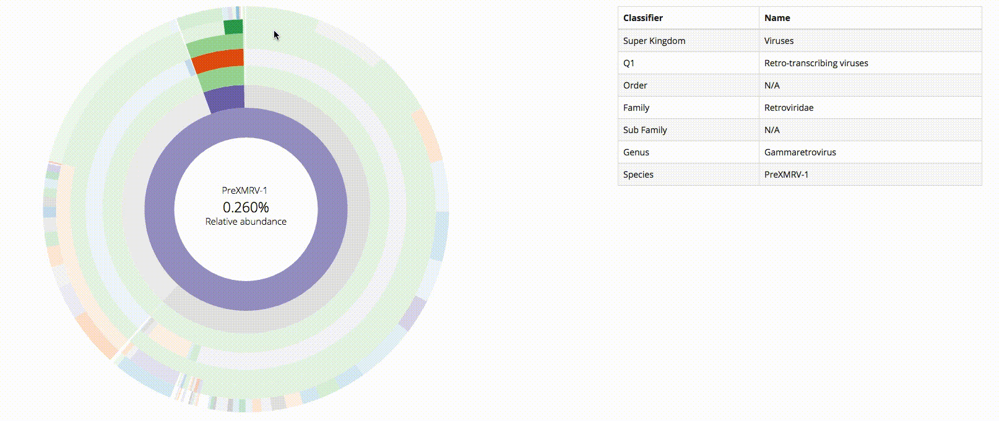

Ez Metagenomic Abundance Pipeline (EzMap)
EzMap is a pipeline designed to allow for the estimation community structure from raw DNA sequence data. EzMap has been designed to work with viral sequence data, however it can also be used with other information sources such as bacterial and fungal communities.
The Pipeline
EzMap is designed to filter, map and estimate community structure simply form FASTQ formatted DNA sequence reads. The pipeline uses the current state of the art bioinformatics tools to complete the analysis. Moving from Raw Reads all the way to complete interactive reporting while also retaining intermediate files to enable further analysis of data.
EzMap is also designed to be customizable by allowing the user to specify host organism genomes to filter out and specify important parameters and threshold for each stage of the pipeline. This allows you to customize EzMap to better suit you analysis.
Interacitve SVG Images
EzMap uses the D3 javascript library to generate dynamic interactive SVG images for each run of the pipeline. This images are compiled into a final interactive HTML report that can be viewed in a internet browser. These figures allow quick and easy analysis of the results allowing the user to export the data in an interactive manner just by mousing over the images. These scalable images can also be saved in an SVG format to the desktop to be used within presentations or figures without scaling or pixelation issues.
Sample HTML Pipeline Report
EzMap's pipeline provides two forms of output available to the user upon completion. The first is a interactive HTML webpage report that displays the results with dynamic figures, and the second is a set of Comma Separated Value (CSV) files that allow for further analysis. By choosing on of the options bellow you can see what this sample report looks like.